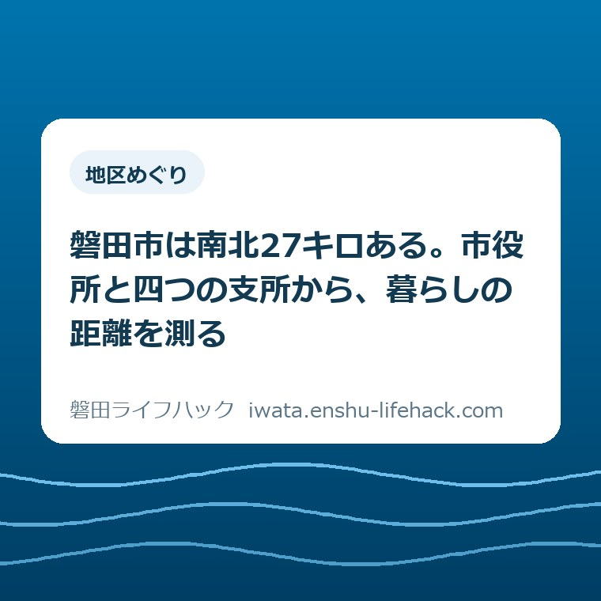

更新：2026.08.28 地区めぐり
磐田市は南北27キロある。市役所と四つの支所から、暮らしの距離を測る

この記事の要点
Q. 磐田市に住むなら、どこでも同じような暮らしになりますか？
A. 同じ市内でも南北で27キロ離れます。市役所と四つの支所という形そのものが、住む場所ごとに移動時間と手続きの手間が変わることを示しています。
導入——磐田市は南北27キロある
磐田市は面積163.34平方キロメートル、東西約11.5キロメートル、南北27.1キロメートルの市です。この形を頭に入れておくと、市内のどこに住むかで暮らしの手間がどれだけ変わるかを、感覚ではなく距離で考えられるようになります。
この記事で考えたいのは、磐田市の広さという数字を知ることそのものではありません。磐田で暮らす人、これから移り住もうとする人、離れて住む家族が、住まいの候補地を比べるときに何を確認すればよいかという実務の話です。
最初の問いは「磐田市に住むなら、どこでも同じような暮らしになりますか」です。市の名前は一つですが、南は遠州灘に面し、北は天竜浜名湖線が走る地域まで含みます。同じ市内でも、日常の移動時間はまったく違います。
先に要点を言えば、磐田市には市役所のほかに福田・豊岡・豊田・竜洋の四つの支所があります。これは行政の都合というより、この広さでは一か所に窓口を集めるだけでは足りないという、地形と距離への答えだと読むことができます。
ただし、この一文だけを切り取って行動すると、対象条件や例外、現地の状況を見落とすことがあります。公式資料で分かること、資料だけでは分からないこと、現地で確かめることを分けて読み進めてください。
住まい探しの現場では、間取りと家賃と価格の比較に時間を使いがちです。しかし数年住んでから効いてくるのは、毎日の移動にかかる時間と、いざというときに窓口や病院までどれだけかかるかという距離の方です。
地区めぐりというテーマは、観光の紹介として読むと楽しい話で終わります。暮らしの判断材料として読むなら、通勤、買い物、通院、送迎、避難という五つの動線に置き換えて考える必要があります。

まず、公式資料から事実を整理する
今回の基礎資料は、磐田市が公開している「磐田市の概要」です。市の公式ページは、対象となる地域や相談先、関連資料へたどるための出発点になります。まず公式の記載を読み、その後に自分の状況と一致する部分を拾うのが安全です。
公式ページによれば、磐田市の位置は日本のほぼ中央、静岡県西部の天竜川東岸に広がる地域であり、遠州灘に面しています。海に面した地域と、内陸の地域の両方を一つの市が抱えているという構造です。
人口は163,593人（令和8年4月末日現在）と記載されています。人口の数字は毎月動くため、実際に判断する日には、市の統計ページで最新の値を確認してください。数字そのものより、確認した日付を書き残すことの方が大切です。なお令和8年7月末現在は163,224人・72,421世帯まで動いており、その1か月の減り方の中身は磐田市の人口16万3224人、7万2421世帯を分解した記事に書きました。
交通については、東海道本線が市の中央部を横行し、天竜浜名湖線が北部を縦断すると記載されています。鉄道が市の中央と北部でそれぞれ別の路線であるという事実は、住む場所によって鉄道の使い勝手が大きく変わることを意味します。
道路は東名高速道路、新東名高速道路、国道1号、国道150号などで構成されると記載があります。国道1号は市の中央付近を、国道150号は海側を通る道です。どちらに近いかで、車での移動感覚は変わります。
歴史については、奈良時代に国分寺と国府が置かれ、江戸時代は東海道53次の見付宿として繁栄したと記されています。市の中心部が古くから交通の要衝であったことは、現在の道路や商業の集まり方にもつながっています。
産業は、繊維産業に加えて金属、自動車、楽器などの工業都市であるとされ、農業では温室メロンや茶、白ねぎなどが知られています。工業と農業の両方が市内に併存していることも、地区ごとの景色の違いを生んでいます。
庁舎については、磐田市役所が磐田市国府台3-1にあり、そのほかに福田支所、豊岡支所、豊田支所、竜洋支所、そしてiプラザ（総合健康福祉会館）が案内されています。窓口が複数あるという事実は、この記事の出発点です。
公式ページを読むときは、見出しだけで判断せず、対象、期限、必要書類、費用、申請先、更新日、関連リンクを順に確認します。PDFが添付されている場合は、本文とPDFのどちらが新しいか、年度表記が一致しているかも見ます。
一方、公式資料にも書かれていないことがあります。個別の土地や建物の状態、家族間の合意、当日の混雑、地域での具体的な運用などです。記載がない部分を「問題ないはず」と推測で埋めず、質問として残すことが大切です。
この記事では、公式資料から確認できる事実と、大石の評価や提案を分けています。以下の評価は資料の記載そのものではありません。公表情報を暮らしへ置き換えたときの見方として読んでください。
磐田の暮らしに置き換える
南北27.1キロという距離は、車で走れば信号待ちを含めて片道40分から1時間程度になり得る長さです。市内という言葉の安心感と、実際にかかる時間との間には差があります。
たとえば海に近い地域に住み、市役所本庁でしか扱えない手続きが必要になった場合、往復で半日仕事になることがあります。支所で済む手続きなのか、本庁まで行く必要があるのかを、動く前に電話で確かめる価値はここにあります。
通勤で考えると、東海道本線を使う人と、車で東名や新東名の入口へ向かう人では、住みやすい場所が変わります。同じ家族の中に鉄道通勤と車通勤が混在するなら、その二つの動線が両立する場所を探すことになります。
子育て世帯であれば、保育園や小中学校までの距離に加えて、送迎の時間帯に道が混むかどうかが効いてきます。地図上の直線距離ではなく、朝7時台と夕方6時台に実際に走ってみるのが確実です。
子育てに関わる手続きは、窓口がiプラザ3階のこども未来課と各支所市民生活課に分かれます。金額と入金の時期を先に押さえておきたい方は、磐田市の児童手当が高校生年代まで月1万円になっている話もあわせてご覧ください。
高齢の親と暮らす、あるいは近くで見守る場合は、通院先までの距離と、そこへ本人がどう行くかを先に決めておく必要があります。運転をやめた後の移動手段まで含めて考えると、住む場所の評価は変わります。
買い物についても、日常の食料品と、まとめ買いや専門店とを分けて考えます。日常の買い物が徒歩や自転車で完結するかどうかは、車を使えない日の生活の質を左右します。
災害への備えでは、海に近い地域と天竜川に近い地域と内陸とで、想定される事象が異なります。市が公開しているハザードマップで、候補地ごとに何のリスクを見るべきかを確認してください。
同じ市内であっても、避難先までの経路が川や線路をまたぐかどうかで、いざというときの動きやすさは変わります。地図を見るだけでなく、避難先まで実際に歩いてみると、坂や横断の多さがすぐ分かります。
もう一つ見落としやすいのが、家族それぞれの動線が別方向を向く場合です。親の通勤が東、子どもの学校が西、祖父母の通院が北という状態になると、一台の車ではまわりません。そこまで含めて距離を測ってください。

評価——良い点と、注文したい点
良い点は、市役所のほかに四つの支所とiプラザが案内されていることです。広い市域に対して窓口が分散していることは、遠い地域に住む人にとって現実的な負担軽減になっています。
もう一つの良い点は、市の概要ページに面積、東西南北の距離、人口が具体的な数字で示されていることです。感覚ではなく数字で語れる資料が公開されていることは、住む場所を比べる側にとって助かります。
注文したい点は、支所で何ができて何ができないかは、暮らす側からは一覧で見えにくいということです。窓口が分散していても、目的の手続きが本庁でしか扱えなければ、移動の負担は結局残ります。
もう一つ注文したい点として、地区ごとの暮らしの違いは、行政の資料には性質上ほとんど書かれません。ここは行政に求めるより、住む側と、地域で仕事をしている人間が言葉にすべき領域だと考えています。
良い面と注意点を同時に見ることが、是々非々で考えるということです。窓口が分散していることを評価しつつ、自分の用件がどこで片づくかは自分で確かめる。この二つは矛盾しません。
対案・結論——三段階で確認する
結論として提案したいのは、住む場所の候補を「距離」で三段階に分けて確認する方法です。一度に全部を見ようとせず、影響の大きい順に確認していきます。
第一段階は、毎日発生する移動です。通勤、通学、送迎がこれにあたります。ここが破綻すると、他がどれだけ良くても長続きしません。実際の時間帯に一度走ってみるのが最短の検証です。
第二段階は、週や月の単位で発生する移動です。買い物、通院、習い事などが該当します。日常ほど頻度は高くありませんが、車を使えない状況になったときに一気に効いてきます。
第三段階は、数年に一度、あるいは一度きりの移動です。市役所や支所での手続き、災害時の避難がこれにあたります。頻度は低くても、そのときの負担は大きく、事前の確認が最も効きます。
確認する順番
- 候補地を二つか三つに絞り、それぞれについて通勤・通学の経路を平日の実際の時間帯に走って計測する。
- 最寄りの支所と市役所本庁までの所要時間を測り、必要な手続きがどちらで扱えるかを電話で確認する。
- 通院先の候補と、本人が運転しなくなった場合の移動手段を書き出す。
- 市が公開しているハザードマップで、候補地ごとの想定と避難先を確認する。
- ここまでの結果を一枚に書き出し、家族で見比べてから物件の比較に入る。
家族で共有するための記録
確認した内容は、頭の中に置かず、一枚の紙か共有できるファイルに残してください。候補地ごとに、所要時間、確認した日、確認先の名前を並べるだけで十分です。
記録を残す最大の理由は、家族の間で判断がずれたときに、事実に立ち返れるようにするためです。印象で議論すると声の大きい人の意見が通りますが、数字が残っていれば話は早く収まります。
確認日は、情報が永遠に有効であることを保証する日ではありません。窓口、金額、期限、運行時刻、様式は変わることがあります。実際に動く日が決まったら、その日の直前にもう一度公式ページを開く必要があります。
離れて住む家族に説明するときも、この記録があると話が早くなります。磐田市がどれくらいの広さで、どこに窓口があり、候補地から何分かかるのか。その三つが伝われば、遠方からでも判断に加われます。
記録の形式は凝らなくてかまいません。候補地の名前、所要時間、確認先、確認日の四項目が並んでいれば十分です。項目を増やすほど続かなくなるので、最初は少なく始めることをおすすめします。
そして、一度書いた記録は捨てずに残しておいてください。数年後に親の住まいや実家のことを考える段になったとき、当時どういう理由でその場所を選んだのかが分かる資料は、驚くほど役に立ちます。
大石の視点
不動産の仕事をしていると、同じ市内であることを理由に、距離の違いが軽く扱われる場面によく出会います。市名が同じというだけで、生活の条件はそろいません。
特に、相続した実家をどうするかという相談では、この距離が判断を左右します。今住んでいる場所から実家まで片道1時間近くかかるなら、管理を続ける前提そのものを疑った方がよい場合があります。片付けの段取りも同じで、粗大ごみを自分で運ぶか業者に頼むかは往復時間で決まります。詳しくは磐田市の粗大ごみと実家じまいの出し方をまとめた記事に書きました。
逆に言えば、距離を先に測っておけば、売る、貸す、使い続けるという選択肢を感情ではなく条件で比べられます。私が最初に距離の話をするのは、そこに理由があります。
磐田市の窓口が分散していることは、この市が広いことの裏返しです。その広さは、海と川と台地を一つの市が抱えているという地形の話でもあります。不便さと豊かさは、同じ事実の別の面です。
今日からできるのは、候補地から市役所本庁までの所要時間を一度測ることです。その結果を記録し、次に支所でできる手続きを確認する、最後に通院と避難の動線を見る。この順番で進めてください。
まとめ
磐田市は面積163.34平方キロメートル、南北27.1キロメートルの市であり、市役所のほかに福田・豊岡・豊田・竜洋の四つの支所が案内されています。この形は、住む場所によって暮らしの距離が変わることを示しています。
急いで結論を出すより、確認の抜けを一つずつ減らす方が確実です。距離は感覚で語らず、実際に走って測る。それだけで、住まい選びの精度は大きく変わります。
- 磐田市は南北27.1キロメートル。同じ市内でも移動時間はまったく違う。
- 市役所と四つの支所という形そのものが、広さへの答えとして読める。
- 支所で何ができるかは自分で確認する。距離は毎日・毎月・数年に一度の三段階で測る。
参考にした公式情報
- 磐田市の概要／磐田市（2026年8月27日確認）
- 市役所・庁舎案内／磐田市（2026年8月27日確認）
- 統計／磐田市（2026年8月27日確認）
最終確認日：2026-08-27 ／ 本記事は公表情報と執筆者の見解を分けて記載しています。制度・数値・公開状況は変更される場合があるため、最新情報は磐田市公式ページでご確認ください。